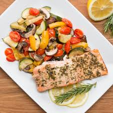

One-Pan Lemon Herb Salmon with Asparagus (Healthy & Fast)
A sheet pan meal ready in under 20 minutes

Ingredients
- 2 salmon fillets (6 oz / 170g each)
- 1 bunch asparagus, woody ends trimmed
- 2 tbsp olive oil
- 2 cloves garlic, minced
- 1 lemon, sliced + juice of ½ lemon
- 1 tsp dried oregano or thyme
- Salt & pepper
Instructions
- Preheat oven to 400°F (200°C). Line a baking sheet with parchment paper.
- Arrange salmon and asparagus on the sheet. Drizzle with olive oil and lemon juice.
- Sprinkle garlic, oregano, salt, and pepper over everything. Place lemon slices on salmon.
- Roast for 12–15 minutes until salmon is flaky and asparagus is tender-crisp.
- Serve with extra lemon wedges.